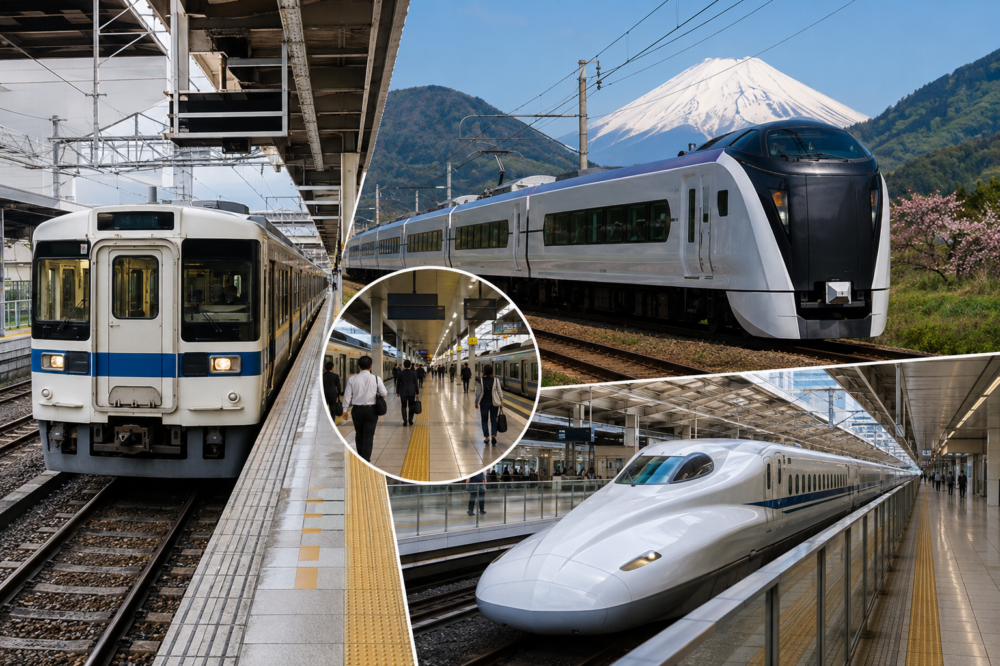
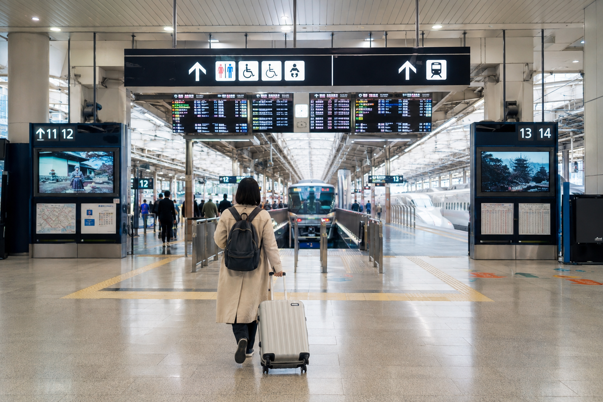
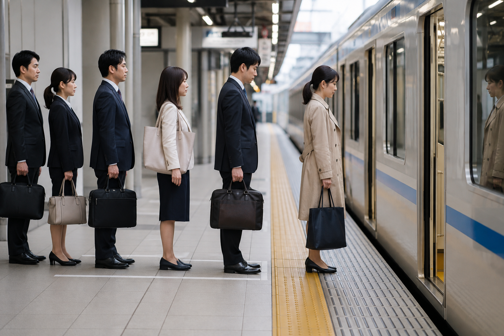

Japan Train Travel Guide for First-Time Visitors
Train travel is one of the easiest ways to explore Japan once you understand a few basic rules. The rail map can look confusing at first because Japan has JR lines, private railway companies, subways, local trains, rapid trains, limited express services, and Shinkansen lines. You do not need to learn all of them before your trip.
For most first-time visitors, the process is much simpler: find the station closest to your destination, check the recommended train, confirm the platform and direction, pay the correct fare, and follow the signs. Major tourist routes have frequent rail service, while rural areas may need more schedule planning.
This guide focuses on how train travel in Japan actually works for a beginner. It explains train types, railway companies, tickets, transfers, stations, and basic route planning. The Japan Rail Pass, Shinkansen, and IC cards are mentioned only where they affect normal train travel because each has its own detailed guide.
Japan Train Travel at a Glance

| Train Type | Typical Use | E xtra Ticket? | Good for First-Time Visitors? |
|---|---|---|---|
| Local | Short city and regional trips | Usually no | Yes |
| Rapid | Faster local/regional trips | Usually no | Yes |
| Express | Fewer stops on some networks | Depends on operator | Yes |
| Limited Express | Faster regional/intercity travel | Usually yes | Yes |
| Shinkansen | High-speed long-distance travel | Yes | Yes |
| Subway/Metro | Travel inside major cities | Normal local fare | Yes |
Train names and fare rules can vary between railway companies, so always check the specific service you plan to use.
Why Trains Work So Well for Japan Travel?
For routes between major cities and tourist areas, trains often reduce the need for:
- ✓Rental cars
- ✓Parking
- ✓Long highway journeys
- ✓Airport transfers
- ✓Driving in unfamiliar cities
A normal first trip may use trains for almost everything.
For example:
Tokyo airport → Tokyo → Kyoto → Osaka → Kansai Airport
can be completed mainly by rail.
Even inside cities, trains and subways often take you close to major sightseeing areas.
You Do Not Need to Understand Every Railway Company
One of the biggest causes of confusion is seeing several companies on the same route map.
Japan does not have one single railway company.
You may see:
- ✓JR
- ✓Tokyo Metro
- ✓Toei
- ✓Keio
- ✓Odakyu
- ✓Tokyu
- ✓Kintetsu
- ✓Hankyu
- ✓Keihan
- ✓Nankai
- ✓Other regional operators
Do not try to memorize them.
A normal sightseeing day can include trains from more than one operator.
The important things are:
Where are you starting?
Where are you going?
Which route is easiest?
What Is JR?
JR stands for Japan Railways.
The former national railway system is now operated by several regional JR companies.
JR runs:
- ✓Local trains
- ✓Regional trains
- ✓Limited express trains
- ✓Many major intercity routes
- ✓Shinkansen services
You will probably use JR at some point during a first Japan trip.
But JR is not the entire Japanese train network.
What Are Private Railways?
Private railway companies operate many routes that can be just as useful as JR.
In some cases, a private railway may:
- ✓Go closer to your destination
- ✓Require fewer transfers
- ✓Cost less
- ✓Provide a faster local route
This is especially important around Tokyo, Kyoto, Osaka, and Nara.
Do not reject a route because it is not JR.
If you do not have a pass that changes the cost, use whichever route works best.
Local Trains
Local trains normally stop at every station along their route.
They are useful for:
- ✓Short journeys
- ✓Smaller stations
- ✓City travel
- ✓Suburban areas
- ✓Connecting to another train
A route planner may tell you to take a local train for only two or three stops.
That is completely normal.
Rapid Trains
Rapid trains skip some smaller stations.
This can make them faster than local trains while using the same general railway corridor.
On many networks, rapid trains do not require an extra surcharge, although service names and rules vary by railway company. JNTO describes rapid services as trains that skip minor stations and generally use the normal fare.
The main thing to check is:
Does this train stop at your station?
A faster train is useless if it passes your destination.
Express Trains
The word express can mean different things depending on the railway company.
An express service generally stops at fewer stations than local or rapid trains.
Some operators include express services in the normal fare.
Others may have services that need an additional ticket.
Never assume based only on the word “express.”
Check the fare shown by your route planner or ticket machine.
Limited Express Trains
Limited express trains are more important for longer regional journeys.
They make fewer stops and can connect cities or tourist destinations that do not use the Shinkansen.
A limited express journey normally includes:
Basic fare + limited express charge
Seat rules vary by service. Some trains offer reserved and other seating arrangements, while some services may require seat reservations. Official JR information shows that limited express ticket types can differ by train.
Examples of journeys where visitors may encounter limited express trains include airport routes and regional travel outside the main Shinkansen corridor.
Shinkansen Is a Separate Type of Train Journey
The Shinkansen is Japan's high-speed rail network.
It connects many major cities and regions, including routes such as:
- ✓Tokyo → Kyoto
- ✓Tokyo → Shin-Osaka
- ✓Shin-Osaka → Hiroshima
- ✓Tokyo → Kanazawa region
The Shinkansen is not simply a faster local train.
It has its own ticketing, seating, reservation, and baggage considerations.
Our Shinkansen Guide: How to Use Japan's Bullet Trains will cover that process step by step.
For now, remember:
Local trains move you around cities and regions.
Shinkansen trains handle many major long-distance journeys.
Subway vs Train: What Is the Difference for a Traveler?
In cities such as Tokyo and Osaka, you will use both.
From a planning point of view, the difference does not need to matter much.
Your navigation app may suggest:
JR train → subway → walk
or:
Subway → private railway
Follow the route that gets you to the correct destination efficiently.
You do not need to stay on one company's network all day.
How Train Fares Work
For a basic local journey, the fare depends mainly on the route or distance traveled.
You can usually pay using:
- ✓IC card
- ✓Paper ticket
- ✓Another accepted ticket or pass
Long-distance and premium trains can involve additional charges.
For example, a limited express or Shinkansen trip may include a basic fare plus an express-related ticket or reservation.
This is why a long-distance train ticket can look more complicated than a normal subway journey.
Do You Need an IC Card?
An IC card makes many everyday train journeys easier.
Instead of buying a paper ticket for every local ride, you can usually tap at the gate when entering and tap again when leaving on compatible networks.
Major cards include:
- ✓Suica
- ✓PASMO
- ✓ICOCA
These cards are widely interoperable across many major transport systems, but they do not replace every long-distance or premium train ticket.
The full setup belongs in IC Cards in Japan: Suica, PASMO and ICOCA Explained.
Paper Tickets Are Still Useful
You do not have to use an IC card.
Paper tickets remain available at stations.
They can be useful when:
- ✓You do not have a compatible IC card
- ✓The journey is outside IC coverage
- ✓You are using a special train
- ✓You need a long-distance ticket
- ✓Your route has specific ticket requirements
For a normal short city journey, the process is usually straightforward.
Basic Paper Ticket Process
A typical local journey works like this:
- ✓Find your destination fare.
- ✓Buy the correct ticket.
- ✓Insert it at the entry gate.
- ✓Take the ticket back from the gate.
- ✓Keep it during the journey.
- ✓Insert it at the exit gate.
If something goes wrong, use the staffed gate rather than repeatedly trying the same ticket.
What If You Buy the Wrong Fare?
Do not worry.
Japanese stations are used to passengers needing fare adjustments.
If the ticket value is too low, you may be able to pay the difference before exiting or ask station staff for help.
Do not let fear of buying the wrong ticket stop you from using trains.
An IC card removes much of this issue for compatible local journeys because the system calculates the fare when you tap out.
Reserved vs Non-Reserved Seats
This mostly matters on longer-distance trains.
Reserved Seat
You have:
- ✓Specific train
- ✓Car number
- ✓Seat number
This can be useful when:
- ✓Traveling during a busy period
- ✓Traveling with family
- ✓You want to sit together
- ✓You have a fixed schedule
- ✓You want more certainty
Non-Reserved or Other Flexible Seating
Availability depends on the specific train.
Some services allow passengers to use eligible non-reserved seating, while others are fully reserved or use a different system.
Do not assume every train has a non-reserved car.
Check the specific service before boarding.
Do Local Trains Need Reservations?
Usually, no.
Local, rapid, and many ordinary commuter services do not require reservations. JNTO's current rail guide notes that reservations generally become relevant for Shinkansen, some limited express trains, and certain sightseeing services rather than normal local travel.
For normal city sightseeing, you usually:
Tap or enter → board → ride → exit
without choosing a seat.
Standing on Local Trains Is Normal
Local commuter trains are not designed like long-distance trains.
You may need to stand.
This is especially common:
- ✓During rush hour
- ✓On busy city lines
- ✓Near major stations
- ✓During festivals or events
Do not expect a reserved seat on normal Tokyo or Osaka commuter trains.
How to Plan a Train Route
For each journey, check:
- ✓Departure station
- ✓Arrival station
- ✓Departure time
- ✓Train line
- ✓Train direction
- ✓Service type
- ✓Platform
- ✓Transfers
- ✓Fare
The most important detail is often the destination or direction shown on the train, not only the line name.
Two trains may use the same railway line but travel in opposite directions.
Do Not Search Only by Attraction Name
Stations can have similar names, and some attractions have several nearby stations.
When planning, check:
Attraction → best station → correct exit
This is better than simply searching for the general neighborhood.
The same attraction may be easier from one railway company than another.
Station Names Can Be Confusing
Japan sometimes has stations with very similar names.
For example, a city may have:
Main city station
and
Shin-city station
The Shin station may be the Shinkansen station and may not be in the same place as the main local station.
Do not assume similar station names mean the same station.
Always check the map before travel.
Your Goal Is Not to Become a Train Expert
A first-time visitor does not need to understand every fare rule or railway company.
You need to understand enough to answer:
Which station?
Which train?
Which direction?
Which platform?
Do I need an extra ticket or reservation?
Once those five questions become familiar, train travel in Japan becomes much easier.
How to Use a Train Station in Japan

Large Japanese stations can look difficult at first, especially places such as Tokyo Station, Shinjuku Station, Kyoto Station, and Osaka Station.
The easiest approach is to break the process into small steps.
When you enter a station, look for:
- ✓Railway company
- ✓Train line
- ✓Destination
- ✓Platform
- ✓Direction
- ✓Departure time
Do not try to understand the whole station map at once.
You only need to find the next part of your journey.
Step 1: Find the Correct Railway
Some large stations contain more than one railway company.
Your route may use:
- ✓JR
- ✓Subway
- ✓Private railway
- ✓Shinkansen
Follow signs for the specific railway shown in your route.
This is especially important in large stations where different companies may have separate ticket gates.
Step 2: Find the Correct Line
Once you reach the right railway area, look for the train line.
Lines are often shown with:
- ✓Names
- ✓Colors
- ✓Letters
- ✓Numbers
These can make navigation easier.
Do not depend only on color because several systems can use similar colors.
Check the line name too.
Step 3: Check the Direction
This is one of the most important steps.
A railway line normally operates in both directions.
Before going to the platform, confirm the direction using:
- ✓Final destination
- ✓Major station names
- ✓Platform signs
- ✓Your route planner
Do not board simply because the train uses the correct line.
It may be traveling the wrong way.
Step 4: Confirm the Train Type
You may see several services on the same line.
For example:
- ✓Local
- ✓Rapid
- ✓Express
- ✓Limited Express
Make sure your destination is one of the stops.
A rapid train can save time, but it may pass your station.
If you are unsure, a local train is sometimes the safer choice because it stops more often.
Step 5: Find the Platform
Platform numbers are usually shown on station signs and departure boards.
Check them again before boarding because platform assignments can sometimes change.
For an important long-distance journey, arrive with enough time to find the correct platform without rushing.
Reading Departure Boards
Departure boards can show:
- ✓Train name
- ✓Departure time
- ✓Destination
- ✓Platform
- ✓Service type
- ✓Delay information
Major stations often provide information in English as well as Japanese.
Before boarding, match at least:
Time + destination + train type
Do not rely on only one detail.
Train Car Numbers
Long-distance trains may have numbered cars.
If you have a reserved ticket, it may show:
- ✓Train
- ✓Car
- ✓Seat
Look for signs on the platform showing where your car will stop.
Waiting in the correct place makes boarding much easier.
How Transfers Work
Transfers are normal in Japan.
A route might look like:
Local train → subway → private railway
or:
JR local train → Shinkansen
Your route planner will normally show where to change.
During the transfer:
- ✓Get off the first train.
- ✓Follow signs for the next line.
- ✓Pass through another gate if required.
- ✓Find the next platform.
- ✓Confirm the direction again.
Do not assume every transfer happens on the opposite side of the same platform.
Some large stations require several minutes of walking.
Give Yourself Enough Transfer Time
A route app may show a very short connection.
That can work if you already know the station.
For your first few days, I would allow more time.
Large stations may involve:
- ✓Stairs
- ✓Elevators
- ✓Long underground corridors
- ✓Different railway companies
- ✓Separate ticket gates
A five-minute transfer can feel very different with luggage.
Same-Platform Transfers
Sometimes the next train leaves from the same platform or across the platform.
These are much easier.
Your route planner may show a short transfer because very little walking is required.
Still confirm the destination before boarding.
Transfers Between Different Railway Companies
These can be more confusing.
You may need to:
- ✓Exit one company's gate
- ✓Walk through the station
- ✓Enter another company's gate
If you use an IC card, payment can be easier on compatible routes.
If you use paper tickets, make sure you understand which ticket belongs to which journey.
What If You Miss a Connection?
For ordinary local trains, this is usually not a serious problem.
Take the next available service.
For reserved long-distance trains, the rules depend on your ticket.
If you miss an important reserved train, speak to railway staff rather than guessing what your ticket allows.
Station Exits Matter
Getting off at the correct station is only part of the journey.
Large stations can have many exits.
The wrong exit can leave you:
- ✓On the opposite side of a large road
- ✓Several blocks from your hotel
- ✓Far from the attraction entrance
- ✓Walking through underground passages
Before arriving, check the recommended exit.
For example:
Station → Exit B4 → 5-minute walk
is more useful than knowing only the station name.
Save Your Hotel's Nearest Station and Exit
Before arriving in Japan, save:
- ✓Hotel name
- ✓Nearest station
- ✓Railway line
- ✓Best exit
- ✓Hotel address
This is especially useful on arrival day when you may be tired and carrying luggage.
Rush Hour on Japanese Trains
Major-city trains can become crowded during commuter periods.
The exact busy times vary, but weekday mornings and early evenings can be much more crowded than the middle of the day.
If possible, avoid moving large luggage during the busiest periods.
A short delay in your schedule can make the journey more comfortable.
Do Not Block Train Doors
When boarding a busy local train:
- ✓Move inside the car
- ✓Keep luggage close
- ✓Leave door areas clear where possible
- ✓Let passengers exit before you board
Standing near the door is sometimes unavoidable, but do not spread bags across the entrance.
Where Should You Put Luggage on Local Trains?
Small bags should stay controlled and close to you.
For backpacks, it can be more comfortable to:
- ✓Hold them in front
- ✓Place them on an overhead rack where appropriate
- ✓Keep them away from other passengers
Large suitcases are much harder during crowded city travel.
This is one reason I prefer moving hotels outside peak commuter periods.
Large Luggage on Long-Distance Trains
Long-distance trains can have specific baggage rules.
The Shinkansen also has special considerations for larger luggage on some routes.
Because those rules can depend on train and suitcase size, they are covered in more detail in Shinkansen Guide: How to Use Japan's Bullet Trains.
If you travel with a large suitcase, do not wait until boarding time to check the rules.
When Luggage Forwarding Helps
Train travel becomes much easier when you are not carrying a large suitcase through every station.
Luggage forwarding can be especially useful for:
- ✓Multi-city trips
- ✓Families
- ✓Large suitcases
- ✓Travelers with limited mobility
- ✓Routes with several transfers
- ✓Sightseeing stops between hotels
For example:
Kanazawa → Shirakawa-go → Takayama
is much easier if your main suitcase is already handled separately.
The full process belongs in Luggage Forwarding in Japan: How Takkyubin Works.
Train Etiquette for First-Time Visitors

Japan train etiquette is mostly about avoiding unnecessary disturbance.
Basic habits include:
- ✓Queue before boarding
- ✓Let passengers exit first
- ✓Keep conversations moderate
- ✓Avoid loud phone calls
- ✓Keep bags controlled
- ✓Respect priority seating
- ✓Follow posted rules
You do not need to overthink every movement.
Pay attention to signs and how other passengers behave.
Phone Calls on Trains
On many commuter trains, loud phone calls are generally avoided.
Messaging, maps, and normal phone use are common.
If you need to make a call, wait until you are off the train unless the situation requires otherwise.
Eating on Trains
Eating depends heavily on the type of train.
Local Commuter Trains
I would avoid eating a full meal.
Long-Distance Trains
Food is much more normal on services designed for longer journeys.
If you are unsure, look at the train type and follow local behavior.
Drinking on Trains
Water and normal drinks are usually easy to manage.
The main issue is avoiding spills or creating inconvenience for other passengers.
Priority Seating
Priority seats are intended for passengers who may need them more.
If you use one and someone appears to need it more, offer the seat.
Some trains also have women-only cars during specific times.
Follow the signs if they apply.
Train Travel With Children
Japan's rail system can work very well for families, but the fastest route is not always the easiest route.
With children, I would favor:
- ✓Fewer transfers
- ✓Easier stations
- ✓Longer connection times
- ✓Hotels near useful rail lines
- ✓Avoiding the busiest commuter periods
A direct train that takes ten minutes longer may be better than two difficult transfers.
Traveling With a Stroller
Large stations may have elevators, but finding them can add time.
If you use a stroller:
- ✓Allow more transfer time
- ✓Check station accessibility
- ✓Avoid very tight connections
- ✓Travel outside the busiest periods when possible
Do not build a schedule around minimum transfer times.
Train Travel With Limited Mobility
Many large stations provide:
- ✓Elevators
- ✓Escalators
- ✓Accessible toilets
- ✓Staff assistance
Smaller stations may have fewer facilities.
If step-free access is essential, check the specific stations before travel.
Do not assume every station has the same layout.
Do You Need the JR Pass for Train Travel?
No.
You can travel around Japan perfectly well using:
- ✓Individual train tickets
- ✓IC cards
- ✓Regional passes
- ✓Other ticket products
The nationwide JR Pass is only one option.
Whether it saves money depends on your itinerary.
Our Japan Rail Pass: Is the JR Pass Worth It ↗? guide will compare the pass with individual tickets in detail.
Regional Rail Passes
Japan also has regional passes that cover specific areas.
These can sometimes make more sense than the nationwide JR Pass if your trip is concentrated in one region.
Examples may cover areas around:
- ✓Kansai
- ✓Kyushu
- ✓Hokkaido
- ✓Eastern Japan
- ✓Western Japan
Do not buy one just because it sounds convenient.
First check whether the trains you plan to use are actually covered.
Why a Pass Can Change Which Train You Take
Without a pass, you may choose the simplest train regardless of operator.
With a specific rail pass, you may prefer a covered route to avoid an extra fare.
That can be useful.
But do not turn a 20-minute journey into a 50-minute journey simply to avoid paying a small local fare unless your budget requires it.
Convenience still matters.
Using Trains in Tokyo
Tokyo train travel is easier when you think in neighborhoods.
A sightseeing day might use:
Asakusa → Ueno → Akihabara
or:
Meiji Jingu → Harajuku → Shibuya → Shinjuku
You do not need one railway company for the whole day.
Use JR, subway, or private rail depending on the route.
Using Trains in Kyoto
Kyoto is less rail-focused than Tokyo.
Some attractions have excellent train access.
Others may require:
- ✓Subway
- ✓Bus
- ✓Taxi
- ✓Walking
Train travel works particularly well for some areas such as:
- ✓Fushimi Inari
- ✓Arashiyama
- ✓Kyoto Station area
- ✓Nara connections
Do not expect trains alone to cover every Kyoto sightseeing day.
Using Trains in Osaka
Osaka is well suited to rail and subway travel.
You may use:
- ✓JR
- ✓Osaka Metro
- ✓Private railways
Major areas such as Namba, Umeda, and other city districts have strong connections.
Hotel location can make a big difference.
Kyoto to Osaka by Train
This journey shows why understanding private railways matters.
There is not one single “correct” Kyoto-to-Osaka train.
The best service depends on:
- ✓Where you are staying in Kyoto
- ✓Where you are going in Osaka
- ✓Whether you have a pass
- ✓How many transfers you want
A direct private railway can sometimes be more convenient than routing everything through major JR stations.
Kyoto to Nara by Train
Nara is an easy rail trip from Kyoto.
Different railway options can place you at different stations in Nara.
Check which station is closer to your planned sightseeing area.
Do not choose based only on the fastest advertised journey.
Osaka to Nara by Train
The same rule applies from Osaka.
Your best route depends on where your Osaka hotel is located.
If you stay around Namba, one railway may be much more convenient than a route starting from Osaka Station.
Hotel location and train choice should be planned together.
Tokyo to Kyoto by Train
For most first-time visitors, the Shinkansen is the standard rail option.
It gives a fast city-to-city connection without airport procedures.
The full booking and boarding process will be covered in the dedicated Shinkansen guide.
For this article, remember that Tokyo-to-Kyoto is a long-distance train journey, not the same type of ticketing as an ordinary subway ride.
Kyoto or Osaka to Hiroshima
The Shinkansen is again the main rail choice for many visitors.
This is why routes such as:
Tokyo → Kyoto → Hiroshima → Osaka
work well without a domestic flight.
Rail travel lets the itinerary move geographically without repeated airport transfers.
How Early Should You Arrive for a Train?
For normal local trains, you do not need to arrive far in advance.
A few minutes is usually enough once you know the station.
For long-distance trains, give yourself more time.
I would arrive earlier if:
- ✓The station is very large
- ✓You are using it for the first time
- ✓You have luggage
- ✓You need to buy or collect tickets
- ✓You have a reserved train
- ✓You need to transfer between railway companies
The goal is not to wait for a long time.
It is to avoid turning an important train into a stressful sprint.
When Should You Reserve Train Seats?
Reservations are most useful when:
- ✓You are traveling during a busy period
- ✓You want to sit with someone
- ✓You have a fixed schedule
- ✓You are using a train that requires reservations
- ✓You are carrying luggage that affects seat choice
- ✓Missing the train would damage the itinerary
For ordinary local trains, reservations are usually not part of the process.
Busy Travel Periods
Train demand can rise during major Japanese holiday periods and popular travel seasons.
If your trip overlaps with a busy period, check long-distance train reservations earlier.
Do not assume every train will sell out, but do not leave a critical route to the last minute either.
Do You Need to Book Every Train Before Japan?
No.
That would make the trip much more rigid than necessary.
I would only plan the journeys that matter most, such as:
- ✓Major city-to-city transfers
- ✓Limited services
- ✓Routes with few departures
- ✓Busy-date travel
- ✓Any trip that affects a hotel check-in
Keep ordinary city travel flexible.
What If a Train Is Delayed?
Japan's rail system is known for punctuality, but delays can still happen.
Weather, accidents, technical problems, or other disruptions can affect service.
If a train is delayed:
- ✓Check station screens
- ✓Check official operator updates
- ✓Follow announcements
- ✓Ask staff if needed
- ✓Avoid making tight onward plans
One delayed train should not ruin your whole itinerary if you leave reasonable buffers around important transfers.
What If a Train Is Cancelled?
Use station staff or the operator's official information to confirm the best alternative.
Depending on your ticket, you may need to:
- ✓Take another train
- ✓Change route
- ✓Rebook
- ✓Use a different service
Do not assume your ticket automatically works on every alternative train.
How to Avoid Missing Your Stop
On local trains, watch:
- ✓Station displays
- ✓Announcements
- ✓Route maps
- ✓Your phone's navigation
Many major trains show upcoming stations clearly.
If you are tired or distracted, set a reminder before your stop.
This is especially useful after a long travel day.
Should You Use Google Maps for Japan Trains?
A route-planning app is extremely useful.
It can help with:
- ✓Train times
- ✓Platforms
- ✓Transfers
- ✓Walking connections
- ✓Estimated fares
- ✓Station exits
But do not follow an app blindly.
Always check station signs too.
Platforms, service changes, and temporary disruptions can affect the route.
Why the Fastest Route Is Not Always the Best Route
Route apps often show several options.
The fastest route may include:
- ✓Very short transfers
- ✓More railway companies
- ✓More walking
- ✓More stairs
- ✓A crowded station change
A route that takes five or ten minutes longer may be easier.
For a first-time visitor, I often prefer:
Fewer transfers + simpler stations
over the absolute fastest route.
Best Train Route With Luggage
If you are changing hotels, I would prioritize:
- ✓Fewer transfers
- ✓Easier station access
- ✓Enough connection time
- ✓Suitable luggage space
- ✓A station close to your hotel
Saving six minutes is not worth dragging a large suitcase through three extra platforms.
How Hotel Location Affects Train Travel
A hotel near a useful station can save a surprising amount of time over a multi-day trip.
Before booking, check:
- ✓Nearest station
- ✓Railway lines
- ✓Walking distance
- ✓Airport connection
- ✓Long-distance train access
- ✓Number of transfers to major areas
A slightly more expensive hotel can sometimes reduce transport costs and daily travel time.
Tokyo Hotel Location and Trains
Good first-time areas often work because they provide useful train access.
Examples include:
- ✓Shinjuku
- ✓Shibuya
- ✓Ueno
- ✓Tokyo Station area
The right choice depends on your itinerary.
Do not choose a neighborhood only because it is famous.
Choose based on the journeys you plan to make.
Kyoto Hotel Location and Trains
Kyoto Station is useful if:
- ✓You have several intercity journeys
- ✓You want easy train access
- ✓You are arriving with luggage
Downtown Kyoto may be better if:
- ✓Evening atmosphere matters
- ✓You want more central walking
- ✓Your sightseeing is concentrated away from the station
There is no single best station area for everyone.
Osaka Hotel Location and Trains
Namba and Umeda are two common transport bases.
They serve different parts of the city and different railway networks.
Before booking, check whether your likely routes start more naturally from:
- ✓Namba
- ✓Osaka/Umeda
- ✓Shin-Osaka
- ✓Another local station
This can reduce unnecessary transfers.
Train Travel Costs Can Add Up
Individual local fares may feel small.
But over several weeks, repeated journeys, day trips, and long-distance trains can become a meaningful part of the budget.
Track:
- ✓Airport trains
- ✓Local city rides
- ✓Shinkansen journeys
- ✓Limited express tickets
- ✓Day trips
- ✓Seat reservations
Do not judge your transport budget only by the price of one Tokyo-to-Kyoto ticket.
How to Save Money on Japan Trains
Start with simple choices.
Use the Most Logical Route
Avoid backtracking.
Compare Rail Passes Only After Building the Itinerary
Do not buy first and plan around the pass later.
Use IC Cards for Convenience, Not Discounts
They mainly simplify payment rather than making every journey cheaper.
Consider Regional Passes
They may work better than the nationwide pass for some routes.
Avoid Unnecessary Shinkansen Trips
For short regional journeys, a normal train may be better value.
Choose a Good Hotel Location
Daily transport savings can add up.
Japan Train Passes: Keep the Decision Separate
There are many different pass products in Japan.
This article is not the place to compare every one.
The main decision rule is:
Route first, pass second.
Build the trip.
Price the major trains.
Then check whether a pass improves the total cost or convenience.
For the nationwide option, use Japan Rail Pass: Is the JR Pass Worth It ↗?
Common Train Travel Mistakes in Japan
Assuming JR Owns Every Train
Private railways are a normal part of the system.
Boarding the Right Line in the Wrong Direction
Always check the destination.
Taking a Rapid Train That Skips Your Stop
Check the stopping pattern.
Assuming Every Express Train Uses the Same Fare Rules
Operators differ.
Confusing Similar Station Names
Check the map before leaving.
Ignoring Station Exit Numbers
The wrong exit can add a long walk.
Planning Minimum Transfer Times
Give yourself extra time in unfamiliar stations.
Carrying Large Bags During Rush Hour
Move hotels outside the busiest periods where possible.
Buying a JR Pass Without Calculating
A pass is not automatically a bargain.
Thinking an IC Card Covers Every Train
Long-distance and premium trains can require separate tickets.
Trying to Memorize the Entire Network
Learn only what your itinerary needs.
First-Time Japan Train Checklist
Before your first major train day, confirm:
- ✓Departure station
- ✓Arrival station
- ✓Railway company
- ✓Train line
- ✓Train type
- ✓Departure time
- ✓Platform
- ✓Direction
- ✓Transfers
- ✓Fare
- ✓Reservation requirement
- ✓Luggage needs
For a long-distance journey, also save your hotel address at the destination.
Checklist Before Boarding
Before stepping onto the train, check:
Is this the right line?
Is it going in the right direction?
Does this train stop at my destination?
Do I need a separate ticket?
Am I in the correct car if I have a reservation?
Those five checks prevent most beginner mistakes.
A Simple First-Time Train Example
Imagine you are traveling from your Tokyo hotel to Kyoto.
The process could be:
- ✓Leave the hotel and reach the local station.
- ✓Take a city train to Tokyo Station or Shinagawa.
- ✓Follow Shinkansen signs.
- ✓Enter using the correct ticket.
- ✓Find your train and car.
- ✓Ride to Kyoto.
- ✓Exit the Shinkansen area.
- ✓Transfer to local transport if needed.
- ✓Reach your Kyoto hotel.
That sounds like many steps when written out.
In practice, signs and route planning make it much easier.
Example: Kyoto to Nara
A simpler day trip could be:
- ✓Leave your Kyoto hotel.
- ✓Reach the correct station.
- ✓Take the recommended train toward Nara.
- ✓Exit at the station closest to your planned sights.
- ✓Sightsee with only a day bag.
- ✓Return to Kyoto in the evening.
No hotel change is needed.
Example: Kyoto to Osaka
You may have several railway choices.
Instead of asking:
“Which Kyoto-to-Osaka train is best?”
ask:
“Which train is best from my Kyoto hotel to my Osaka hotel?”
That small change usually gives a better answer.
Example: Tokyo Sightseeing Day
Your day may use multiple train systems without feeling difficult.
For example:
Hotel → Asakusa by subway
Asakusa → Ueno
Ueno → Shibuya by JR
Shibuya → hotel
There is no need to keep the whole day on JR.
How RoamPlans Can Help With Train Planning
Use the Travel Itinerary Builder to put your cities in a logical order before you start buying long-distance train tickets.
For example:
Tokyo → Kyoto → Osaka
is easier than unnecessary backtracking between the same regions.
Then use the Trip Cost Estimator to compare itineraries with more or fewer intercity train journeys.
This helps you see the transport impact before you book hotels.
Frequently Asked Questions
Is train travel easy in Japan for first-time visitors?
Yes. The network looks complicated, but you only need to understand the lines and stations used by your own itinerary.
Do I need to speak Japanese to use trains?
No. Major stations and tourist routes provide enough signage and route information for many international visitors to travel independently.
What is the difference between local and rapid trains?
Local trains stop at more stations. Rapid trains skip some stops and can be faster.
What is a limited express train?
It is a faster service that stops at fewer stations and usually requires an extra limited express fare in addition to the basic ticket.
Do I need reservations on Japanese trains?
Not for most local trains. Reservations matter more for some long-distance, limited express, sightseeing, and Shinkansen services.
Can I use an IC card for trains?
Yes, on many compatible local and regional networks. It does not replace every long-distance ticket.
Is JR the same as the Japanese train system?
No. JR operates a major part of the network, but many private railway companies also operate useful trains.
Is the JR Pass required to travel by train?
No. You can use individual tickets, IC cards, and other passes.
Can I take luggage on Japanese trains?
Yes, but large luggage can make transfers harder, and some long-distance trains have specific baggage rules.
How early should I arrive for the Shinkansen?
Give yourself extra time if you are unfamiliar with the station, have luggage, or need to collect tickets. Normal local trains do not require the same buffer.
What happens if I get on the wrong train?
Get off at a suitable station, check your route again, and continue. On local services, it is usually a minor mistake.
Should I avoid rush hour?
If possible, especially when moving with large luggage. Crowded commuter trains can make transfers much harder.
Can I travel between Tokyo, Kyoto, and Osaka entirely by train?
Yes. These cities are very well connected by rail.
Final Thoughts
Japan train travel becomes much easier once you stop trying to understand the whole rail network at once. Learn the station, line, direction, train type, and ticket needed for each journey. Use local and private railways where they make sense, reserve long-distance trains when useful, and give yourself more time in unfamiliar stations. After a few rides, the system usually feels far less difficult than it did before arrival.